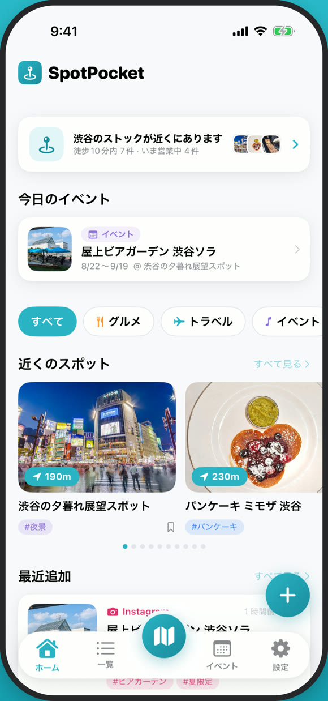
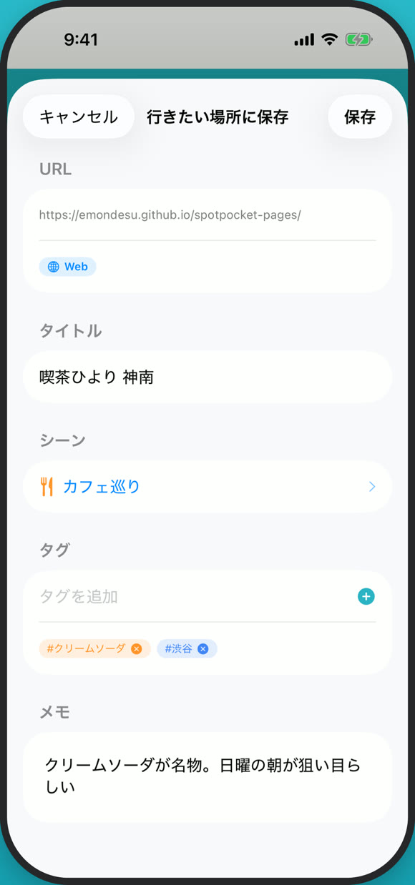
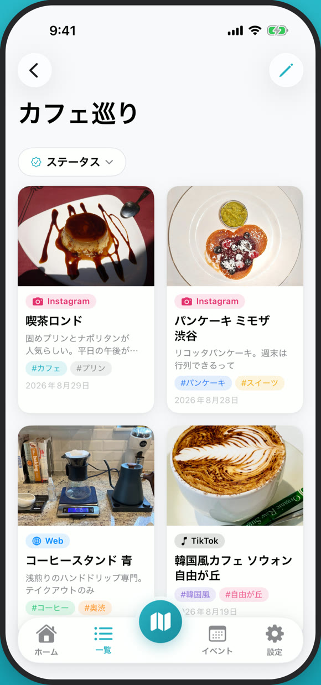
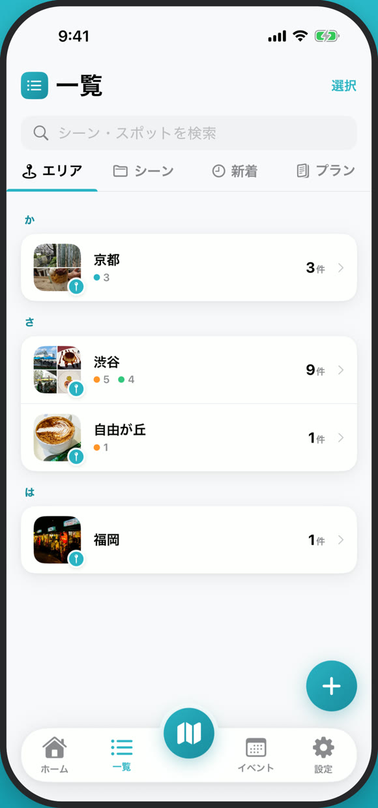
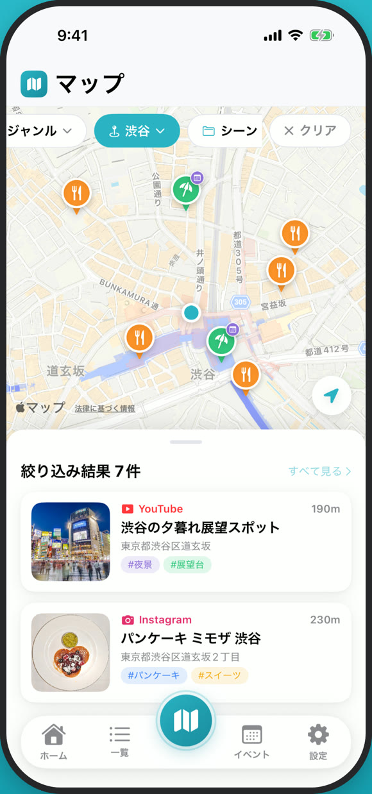
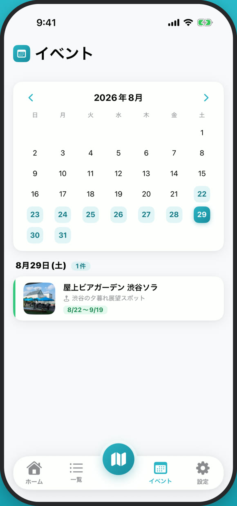

あのお店、
どこで見たんだっけ
Instagram で見たカフェ、YouTube で見た観光地、友だちが送ってくれた食べログのリンク。 行きたい場所は、アプリごとにバラバラに散らばっていきます。 SpotPocket は、それを共有ボタンひとつでひとつのポケットにまとめる iPhone アプリです。
iOS 17.0 以降の iPhone に対応・アカウント登録不要

保存できるところ
気になるお店は、共有ボタンひとつ
見つけたその場で、アプリの共有シートから SpotPocket を選ぶだけ。 アプリを行き来する必要も、あとで貼り直す手間もありません。
- タイトル・サムネイル・お店の場所は、次にアプリを開いたときに自動で埋まる
- 電波が悪い場所でも、保存だけ先に済ませられる
- 同じリンクをもう一度保存しようとすると教えてくれる

集めるほど、迷わなくなる
「ランチ」「居酒屋」「お買い物」——行きたい場所を、その日の行動タイプ＝シーンでまとめます。 「渋谷」「京都」など自分で決めたエリアに割り当てておけば、旅先が決まったときに棚から取り出すだけ。
- エリアは保存したあとから設定でき、住所がわかっていれば候補も出る
- エリアの棚は五十音順。増えても目的の場所にすぐ届く
- タイトル・メモ・タグ・シーン名・エリア名・SNS の種類から検索できる


お出かけの日は、地図が教えてくれる
保存した場所はマップにまとまります。エリア・シーン・「まだ行っていない場所だけ」で絞り込めるので、 いま歩いている街で「そういえば近くに保存してたな」を取りこぼしません。
- 徒歩10分圏内に保存したスポットがあると、ホームに「いまここ」カードが出る
- 徒歩距離順にならべて、「営業中のみ」に絞れる
- 行った場所は「行ってきた」に切り替えて、行きたいところだけを残せる

期間限定は、終わる前に行く
ポップアップや展示、季節のフェア。開催期間つきで保存しておけば、 カレンダーで見渡せて、始まる日には通知が届きます。
- 月カレンダーで開催期間をまとめて確認できる
- マップでは開催中・開催予定のイベントがある施設にバッジが付く
- ホームには「今日のイベント」が並ぶ

ほかにも、こんなことができます
ためるだけで終わらせないための道具が、ひととおり揃っています。
旅のしおり
保存したスポットを「1日目・2日目・未定」に並べてお出かけプランに。表紙と出発日を決めると、出発までのカウントダウンが出ます。
おすそわけ
しおりを画像で見せるか、SpotPocket でだけ開けるファイルで渡せます。受け取った人はそのまま自分のアプリに取り込めます。
ホーム画面ウィジェット
次のお出かけまでのカウントダウンと、保存したスポットの数をホーム画面に表示できます。
行った / 行きたい
訪れたスポットは「行ってきた」に。マップでも一覧でも、まだ行っていない場所だけに絞り込めます。
タグとメモ
自分でつけるタグに加えて、投稿のキャプションからハッシュタグを自動で拾います。「なぜ行きたいのか」はメモに。
オフライン保存
地下や山の中でも保存だけは通ります。タイトルやサムネイルは、電波が戻ってから自動で取りに行きます。
バックアップ
保存したデータをまるごとファイルに書き出して、あとから復元できます。機種変更のときも安心です。
重複の防止
同じ URL をもう一度保存しようとすると、先に保存したものを教えてくれます。
保存先は、あなたの端末の中だけ
「行きたい場所」は、けっこう個人的な情報です。だから最初からそう作りました。
開発者のサーバーはありません
保存した URL・タイトル・タグ・メモ・位置情報は端末内にだけ保存され、開発者が受け取ることはありません。
アカウント登録・ログイン不要
メールアドレスも電話番号も聞きません。入れたその場から使いはじめられます。
トラッキングしません
広告は興味関心に基づかない「非パーソナライズ広告」のみ。アプリを横断する追跡の許可を求めることもありません。
取り扱いの詳細は プライバシーポリシー に記載しています。
行きたい場所を、ひとつのポケットに。
無料でダウンロードできます。iOS 17.0 以降の iPhone に対応。
困ったときは
不具合の報告・ご要望・ご質問をお待ちしています。
サポートページ
使い方のヒントとお問い合わせ先をまとめています。
サポートを見る →
お問い合わせ
GitHub の Issue で受け付けています。
Issue を作成する →
プライバシーポリシー
取り扱う情報と、その範囲について。
ポリシーを読む →
English
That place you saw — where was it again?
SpotPocket is a free iPhone app that saves the places you want to visit from Instagram, YouTube, TikTok, X, Tabelog, Google Maps, and the open web — with one tap from each app's native Share Sheet.
- Titles, thumbnails, and locations fill in automatically the next time you open the app
- Organize by scene (lunch, drinks, shopping) and by area you define yourself
- A "right here" card appears on Home when saved spots are within a 10-minute walk, with an "open now" filter
- Save limited-time events with their dates, see them on a monthly calendar, and get a reminder when they start
- Build trip plans and hand them to a friend as an image or a SpotPocket file — no server involved
- Everything stays on your device. No account, no sign-in, no tracking; ads are non-personalized only